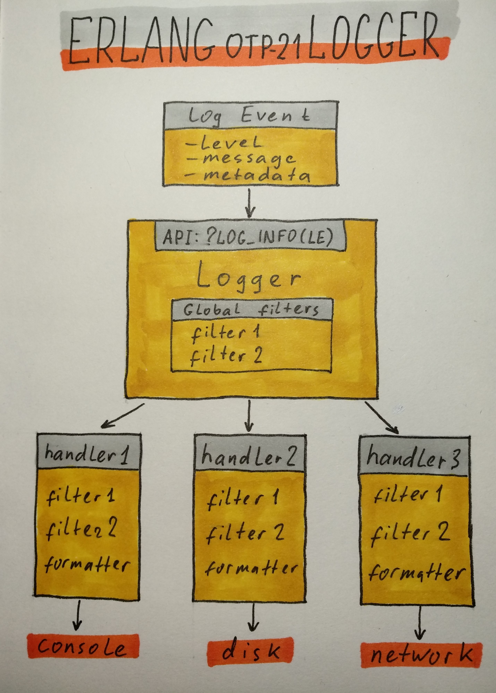

Примеры использования Erlang Logger
9 февраля 2020
Вступление
Ведение логов в высоко нагруженных проектах — задача не тривиальная. И требует не простых инструментов. Долгие годы для эрланг проектов стандартом де-факто была библиотека lager. Но с версии OPT-21 у эрланг появилось штатное средство из коробки -- модуль logger.
(Вернее, стандартное средство было и раньше — модуль error_logger. Но он не удобен в использовании и не подходит для больших нагрузок, так что им никто не пользовался).
Logger, конечно, не новость — он появился в 2018 году. Про него написано не мало, и документация имеется хорошая. Однако эту документацию нужно прочитать, чтобы правильно им пользоваться.
Кроме основных сценариев использования — выводить логи на консоль, и ротировать в файлах — бывают нетривиальные случаи. Про такие случаи в моих проектах я и хочу рассказать.
Как устроен logger
Но сначала, для полноты картины, я все-таки расскажу в двух словах как устроен logger.

Начинается все с того, что создается LogEvent. Это объект, который содержит:
- log level (debug, info, warning, error — 8 штук согласно протоколу syslog);
- message;
- metadata (pid, time, mfa, file, line и др).
Message может быть:
- просто строка;
- строка для форматирования и аргументы;
- report (map или proplist).
LogEvent передается в Logger API, представленное либо функцией logger:log либо макросами и функциями, которые её оборачивают (?LOG_INFO, ?LOG_ERROR, logger:info, logger:error).
Макросы добавляют метаданные (без них это пришлось бы делать вручную), а также проверяют log level, и не вызывают функцию log, если level ниже указанного в конфигурации. Это веская причина, чтобы пользоваться именно макросами, а не функциями.
Logger применяет глобальные фильтры, затем передает LogEvent каждому хендлеру. Хендлеры применяют свои фильтры, форматируют сообщение, и что-то с ним делают.
Большая часть работы выполняется в потоке клиента — процесса, который сгенерировал LogEvent. В потоках хендлеров выполняется меньшая часть работы для событий, которые смогли пройти через все фильтры. (Чем это хорошо, см в посте Фреда Хеберта, ссылку на который я даю ниже).
Форматирование LogEvent в строку выполняется отложено, опять только для событий, прошедших через фильтры.
Где почитать подробности
Начать следует отсюда: Logging. Здесь описана архитектура логера, из каких компонентов он состоит, и как это все взаимодействует. Стоит обратить отдельное внимание на раздел 2.11 Protecting the Handler from Overload.
Затем стоит просмотреть Logging Cookbook. Здесь даны примеры конфигурации для разных случаев.
Потом я весьма рекомендую почитать Фреда Хеберта, его пост Erlang/OTP 21's new logger. Пост весьма длинный, как это обычно бывает у Фреда. Там есть рассуждения, чем хороша архитектура logger. Но, главное, там есть весьма толковые рекомендации, как вообще правильно подходить к логированию. Чтобы потом, когда дела на проде пойдут как-нибудь не так, не было мучительно больно разбираться с этим "не так" по логам, которые вы сами и нагенерировали.
Цитата: "You get better at logging once you've seen enough terrible and useless logs to know what to avoid."
Наконец, документация по 5 модулям, из которых состоит logger:
Сюда нужно заглядывать в поисках каких-либо специфических деталей.
Тривиальные и нетривиальные использования logger
Теперь, наконец, подходим к примерам из моей практики.
Фильтрация progress reports
На старте ноды генерируется много событий вида:
info 2020-02-05T17:20:24.045738+03:00 <0.1884.0> supervisor: {<0.1884.0>,ranch_listener_sup}, started:
[{pid,<0.1885.0>},{id,ranch_conns_sup},{mfargs,{ranch_conns_sup,start_link,[jd_metrics,ranch_tcp,cowb
oy_clear]}},{restart_type,permanent},{shutdown,infinity},{child_type,supervisor}]
info 2020-02-05T17:20:24.046339+03:00 <0.1886.0> supervisor: {<0.1886.0>,ranch_acceptors_sup}, started
: [{pid,<0.1887.0>},{id,{acceptor,<0.1886.0>,1}},{mfargs,{ranch_acceptor,start_link,[#Port<0.8>,ranch_
tcp,error_logger,<0.1885.0>]}},{restart_type,permanent},{shutdown,brutal_kill},{child_type,worker}]Супервизоры бодро рапортуют о своем запуске и запуске воркеров. Если проект большой: десятки приложений, тысячи супервизоров, десятки тысяч воркеров, то можно получить много экранов таких логов в консоли.
Ноду в консоли обычно запускают не для того, чтобы смотреть там на эти progress reports. В файле такие логи пусть себе будут, а в консоли они только мешают. Хорошо бы их убрать.
Для этого есть стандартный фильтр logger_filters:progress/2. Подключим его:
[
{kernel,
[
{logger_level, info},
{logger,
[
{handler, default, logger_std_h,
#{
level => info,
filters => [
{skip_progress_info, {fun logger_filters:progress/2, stop}}
]
}},
...И порядок, лишнего шума в консоли больше нет.
(Признаюсь, я сначала писал свой кастомный фильтр для этого. Потому что не прочитал документацию, и не знал, что есть стандартный фильтр.)
Фильтрация сообщений от супервизоров библиотеки amqp_client
Если вам повезло работать с RabbitMQ через библиотеку amqp_client, то там тоже на старте ноды генерируются сообщения от супервизоров из этой библиотеки. Но они не являются progress report, и не отсекаются стандартным фильтром.
notice 2020-02-07T13:38:11.614619+03:00 <0.3158.0> supervisor: {<0.3158.0>,amqp_connection_sup}, started:
[{pid,<0.3160.0>},{name,connection},{mfargs,{amqp_gen_connection,start_link...
notice 2020-02-07T13:38:11.619991+03:00 <0.3151.0> supervisor: {<0.3151.0>,amqp_connection_type_sup}, started:
[{pid,<0.3183.0>},{name,channel_sup_sup},{mfargs,{amqp_channel_sup_sup,start_link, ...Хотелось бы эти сообщения тоже убрать из консоли. Тут придется написать кастомный фильтр:
-module(my_log_filter).
-export([amqp_sup_noise_filter/2]).
amqp_sup_noise_filter(#{
msg := {report, #{report := [{supervisor, {_, amqp_connection_sup}} | _]}}
}, _Args) ->
stop;
amqp_sup_noise_filter(#{
msg := {report, #{report := [{supervisor, {_, amqp_connection_type_sup}} | _]}}
}, _Args) ->
stop;
amqp_sup_noise_filter(#{
msg := {report, #{report := [{supervisor, {_, amqp_channel_sup}} | _]}}
}, _Args) ->
stop;
amqp_sup_noise_filter(LogEvent, _Args) ->
LogEvent.И добавить этот фильтр в настройки хендлера:
{handler, default, logger_std_h,
#{
level => info,
filters => [
{skip_progress_info, {fun logger_filters:progress/2, stop}},
{amqp_sup_noise_filter, {fun my_log_filter:amqp_sup_noise_filter/2, no_args}}
]
}},Нужно смотреть структуру LogEvent и подобрать подходящий шаблон, чтобы его отфильтровать.
Ротация логов стандартными хендлерами logger_std_h и logger_disk_log_h
Logger имеет в комплекте два стандартных хендлера. Они оба умеют ротировать файлы, но делают это по-разному.
logger_std_h имеет свою реализацию, а logger_disk_log_h использует систему disk_log. Это старая система хранения термов в файлах, которая используется в некоторых стандартных приложениях: stdlib, kernel, inets, mnesia и др.
Чтобы понять разницу в поведении этих хендлеров, проведём эксперимент. Запустим два воркера, каждый из которых с интервалом в 2 секунды будет делать запись в лог:
-record(state, {
id :: integer(),
counter = 0 :: integer()
}).
...
init(ID) ->
?LOG_NOTICE(#{?MODULE => init, id => ID}),
timer:send_interval(?action_timeout, do_action),
{ok, #state{id = ID}}.
...
handle_info(do_action, #state{id = ID, counter = I} = State) ->
?LOG_INFO(#{?MODULE => do_action, id => ID, counter => I}),
{noreply, State#state{counter = I + 1}};И сконфигурируем одинаково оба хендлера:
{handler, handler_1, logger_std_h,
#{
level => info,
config => #{
file => "logs/rotation_std_h.log",
max_no_bytes => 2048,
max_no_files => 3
}
}},
{handler, handler_2, logger_disk_log_h,
#{
level => info,
config => #{
file => "logs/disk_log_h_wrap.log",
max_no_bytes => 2048,
max_no_files => 3
}
}},В ротации участвуют 3 файла, для каждого файла действует лимит в 2Кб (20 - 30 строк лога).
Запустим, и понаблюдаем, что происходит в файлах. Там сначала появляются логи старта ноды, а потом такие записи:
2020-02-05T12:45:06.122172+03:00 info: counter: 2, id: 1, pwl_worker: do_action
2020-02-05T12:45:06.122172+03:00 info: counter: 2, id: 2, pwl_worker: do_action
2020-02-05T12:45:08.122173+03:00 info: counter: 3, id: 2, pwl_worker: do_action
2020-02-05T12:45:08.122147+03:00 info: counter: 3, id: 1, pwl_worker: do_action
2020-02-05T12:45:10.123158+03:00 info: counter: 4, id: 1, pwl_worker: do_action
2020-02-05T12:45:10.123158+03:00 info: counter: 4, id: 2, pwl_worker: do_actionХендлер logger_std_h работает так:
- сначала создается файл rotation_std_h.log и заполняется логами до лимита;
- затем создается файл rotation_std_h.log.0, старые логи переносятся в него, новые логи пишутся в rotation_std_h.log;
- когда rotation_std_h.log.0 достигает лимита, создается rotation_std_h.log.1, логи из log.0 переносятся в log.1, из log в log.0, и в log пишутся свежие логи;
- всего получается 4 файла ротации, и после того, как все 4 файла достигают лимита, логи из последнего файла теряются.
Содержимое файлов при росте количества логов:
1-й этап
| файл | контент |
|---|---|
| rotation_std_h.log | start - counter 7 |
2-й этап
| файл | контент |
|---|---|
| rotation_std_h.log | counter 8 - counter 11 |
| rotation_std_h.log.0 | start - counter 7 |
3-й этап
| файл | контент |
|---|---|
| rotation_std_h.log | counter 21 - counter 25 |
| rotation_std_h.log.0 | counter 8 - counter 20 |
| rotation_std_h.log.1 | start - counter 7 |
4-й этап
| файл | контент |
|---|---|
| rotation_std_h.log | counter 34 - counter 38 |
| rotation_std_h.log.0 | counter 21 - counter 33 |
| rotation_std_h.log.1 | counter 8 - counter 20 |
| rotation_std_h.log.2 | start - counter 7 |
5-й этап
| файл | контент |
|---|---|
| rotation_std_h.log | counter 47 - counter 51 |
| rotation_std_h.log.0 | counter 34 - counter 46 |
| rotation_std_h.log.1 | counter 21 - counter 33 |
| rotation_std_h.log.2 | counter 8 - counter 20 |
Хендлер logger_disk_log_h работает так:
- сразу появляется файл disk_log_h_wrap.log.1 и два небольших бинарных файла disk_log_h_wrap.log.idx, disk_log_h_wrap.log.siz. В log.1 накапливаются логи до лимита;
- затем появляется файл disk_log_h_wrap.log.2, и новые логи пишутся уже в него;
- затем появляется файл disk_log_h_wrap.log.3, и тоже наполняется до лимита;
- когда последний файл в ротации наполняется, запись опять идет в disk_log_h_wrap.log.1, и так по кругу.
Содержимое файлов при росте количества логов:
1-й этап
| файл | контент |
|---|---|
| disk_log_h_wrap.log.1 | start - counter 7 |
2-й этап
| файл | контент |
|---|---|
| disk_log_h_wrap.log.1 | start - counter 7 |
| disk_log_h_wrap.log.2 | counter 8 - counter 11 |
3-й этап
| файл | контент |
|---|---|
| disk_log_h_wrap.log.1 | start - counter 7 |
| disk_log_h_wrap.log.2 | counter 8 - counter 19 |
| disk_log_h_wrap.log.3 | counter 20 - counter 25 |
4-й этап
| файл | контент |
|---|---|
| disk_log_h_wrap.log.1 | counter 33 - counter 39 |
| disk_log_h_wrap.log.2 | counter 8 - counter 19 |
| disk_log_h_wrap.log.3 | counter 20 - counter 32 |
5-й этап
| файл | контент |
|---|---|
| disk_log_h_wrap.log.1 | counter 33 - counter 44 |
| disk_log_h_wrap.log.2 | counter 45 - counter 53 |
| disk_log_h_wrap.log.3 | counter 20 - counter 32 |
Таким образом, logger_std_h обеспечивает более привычную ротацию. За ней можно следить, например, с помощью tail -f. И подключать тулы, типа Filebeat или Logstash.
А logger_disk_log_h работает достаточно экзотично. Чтобы узнать, в каком именно файле находятся последние логи, нужно смотреть время изменения файла. tail -f использовать нельзя, и подключить Filebeat сложно.
(Говорят, что disk_log вроде как работает быстрее, но я не проверял.)
Ротация определенного вида событий в отдельном файле
Допустим, есть некий отдельный вид логов, которые мы хотим складывать в отдельный файл, а не вместе с другими логами.
В моем случае это информация о запросах в систему, которые обрабатывались медленнее обычного. Каждый такой запрос и связанный с ним контекст хочется куда-то сохранить для последующего разбора. Но не в общий лог, который ротируется слишком быстро.
В этом случае можно пометить LogEvent, как относящийся к некоторому домену:
?LOG_INFO(#{event => slow_request, request => Request, context => Context}, #{domain => [slow_request]})И применить стандартный фильтр logger_filters:domain/2:
{handler, handler_1, logger_std_h,
#{
level => info,
config => #{ ... },
filters => [
{ignore_slow_request, {fun logger_filters:domain/2, {stop, equal, [slow_request]}}}
]
}},
{handler, handler_2, logger_std_h,
#{
level => info,
config => #{ ... },
filters => [
{ignore_all_but_slow_request, {fun logger_filters:domain/2, {stop, not_equal, [slow_request]}}}
]
}}Фильтр нужно указать для всех хендлеров. В одном случае, чтобы пропускать только нужный домен, в остальных случаях, чтобы пропускать все, кроме этого домена. Если хендлеров много (отдельные хендлеры для разного уровня логов: debug, info, warning, error etc), то такая система не очень удобна. Но лучшей мы не придумали.
В принципе, если лог сам по себе не большой, то нет беды, если он попадет в общую ротацию. И тогда можно поставить фильтр только на один хендлер. Но в нашем случае лог большой, и писать его сразу в несколько файлов не хочется.
Заключение
Тема логирования большая и интересная. Тут много о чем можно написать:
- централизованное хранение логов с нескольких машин/сервисов (ELK стек);
- логирование в Elixir;
- цветной вывод на консоль (error красный, warning желтый и т.д.).
Возможно, будет продолжение :)
comments powered by Disqus